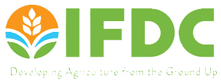
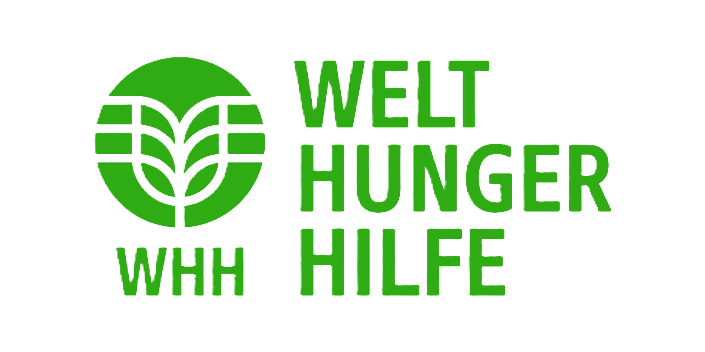

Driving Impact Through Research & Innovation
Passionate about public health, climate resilience, and MEAL, I specialize in research, impact
evaluations, and capacity building. With a data-driven approach, I transform insights into actionable strategies
that drive meaningful change and sustainable solutions.
üìç Based in Kenya | üåç Global Experience in Africa, MENA, & South Asia
Start ReadingHello, I'm Onguto Nicholas
I am a highly skilled researcher and consultant with over a decade of
experience in public health,
humanitarian response, statistical analysis, and climate resilience. My expertise spans monitoring &
evaluation (MEAL), GIS, epidemiology, and policy advisory. Whether it's leading large-scale research,
optimizing program impact, or applying machine learning for data-driven decision-making—I help organizations
turn data into impactful solutions.
üî¨ Research. Analyze. Innovate.
Let's collaborate!
Services
-
Research & Data Analysis
Conducting qualitative and quantitative research to inform policy and programs.
-
MEAL (Monitoring & Evaluation)
Developing MEAL frameworks, real-time monitoring, and capacity-building initiatives.
-
Public Health & Humanitarian Consulting
Guiding health and nutrition programs through assessments and evaluations.
-
GIS & Information Management
Designing data tools and training teams in GIS for emergency response.
-
Proposal & Grant Writing
Helping secure funding through well-structured proposals.
-
Training & Capacity Building
Running workshops to improve data-driven decision-making.
Key Projects & Achievements
-

Public Health & Epidemiology
Led studies on conflict and public health (UNICEF, IOM), SRHR & MHPSS assessments (World Vision).
-

Climate Change & Resilience
Conducted climate vulnerability assessments (iMMAP), market analysis for sustainable WASH (Care International, Water.org).
-

Monitoring & Data Science
Designed MEAL systems for multi-country programs, evaluated value chain projects, and led impact assessments (IFDC, WHH).
Successful projects, happy clients
- 
-

-

- 
-